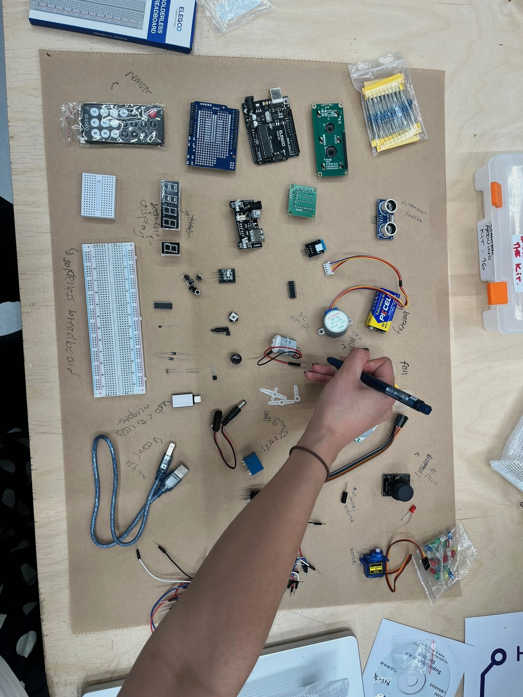
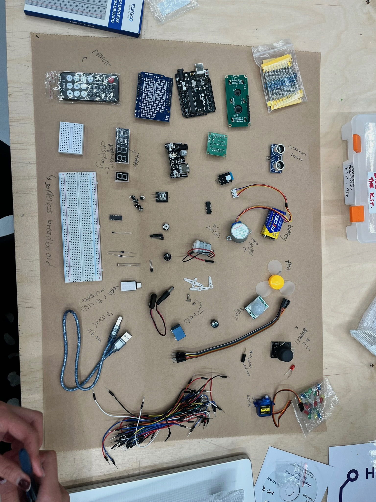
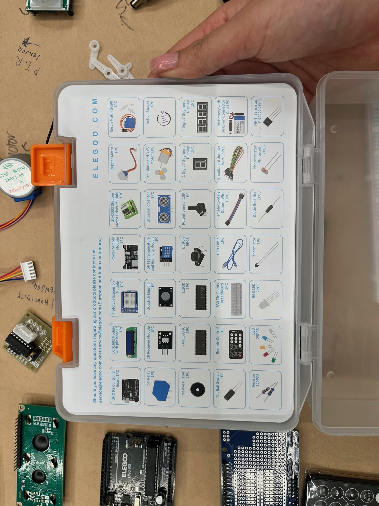
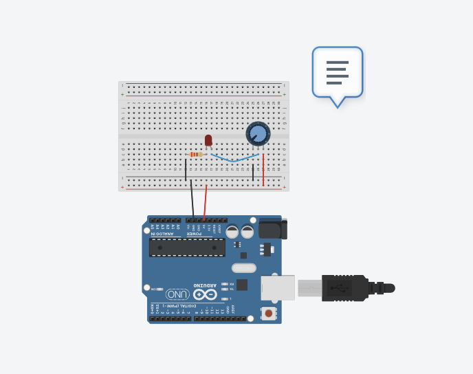
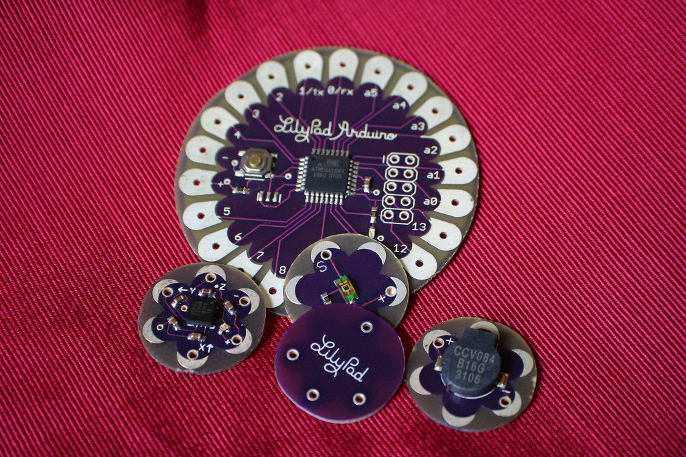

<week seven reflection> <p> In Week Seven we began to explore physical computation. Literally what the hell is an Arduino? Where is the bread? I like the colours of the wires though. Where do they even go? Why is everything negative? I don't even know what an electron is. </p> //p.s. me and meg worked together for most of the class so we have most of the same images/ videos! she is my bf4l
<activities>
<h3> guess the part </h3> <p> Here we had to guess what the parts of our Arduino kit were called. Obviously I knew nothing. I'm like just a girl. Who do they even think we are? It was really cool seeing all the elements behind a physical computation though. Could totally get into this. I don't know, do I even belong in the STEM field? Maybe someone else would be better at it. My dad said I shouldn't really bother. Whatever. </p> <image>

</image> <image>

</image> <p> Here are the actual parts of the kit. Totally would not have guessed that. How do I even pronouce potentiometer? </p> <image>

</image> <h3> light on light off </h3> <p> So this is like a basic circuit. Was totally cool. It's powered by a battery and used a basic pushbutton to control the LED light. When the button was pressed, the LED turned on and when it was released, the LED turned off. Seems totally simple but with literally zero knowledge about circuits and electrons it totally taught me something foundational. I now understand that circuits only work when you close the loop. The electricity has to flow from the battery's positive side through the resistor and LED, and then back to the battery's negative side. This was sooo helpful in understanding how every circuit ends. Where there is a start there is an end!!! Also learning how to use a breadboard to make all those electrical connections!!! Everything is connected, totally like that red string theory. </p> <video> </video> <h3> potentialometer (is that how i spell it?) and light </h3> <p> So this circuit uses a potentiometer (I can spell it but I cannot pronounce it omfg). In these examples it controlled the LED light and the fan. So I learnt that as we turn the knob it sends out like number input to the Arduino which then maps out an output to adjust the light brightness or the fan speed. So freaking cool.
The potentiometer has three pins, one that connects to the power, one to ground and the middle to the input on the Arduino.
This was superrr helpful in learning how input can directly control the output and how objects can be controlled through variables and can be adjusted gradually, rather than just on and off.
</p> <video> </video> <image>

</image> <h3> potentiometer and a fan! </h3> <p> </p> <video> </video>
<research>
<h3> LilyPad Arduino by Leah Buechley </h3> <p>
Leah Buechley created the LilyPad Arduino which is a sewable microcontroller designed for wearable tech and e-textiles. Her work makes electronics accessible and challenges the idea that tech must be hard, rigid, or masculine. Her work resonated really well in the way she turned something that felt unapproachable into something that was accessible. Her creation rejected the rigid, masculine aesthetics of most electronics kits and embraced softness, flexibility, and creativity. It spoke volumes in how technology can be manipulated and radicalised. </p> <image>

</image> <h3> SHYBOT by Norma Jeane </h3> <p> SHYBOT was a robot designed to roam the desert while actively avoiding any sort of human contact. Unlike most robots, which are made to engage, serve, or respond to people, SHYBOT deliberately refuses interaction. Its behaviour is framed as anti-social and awkward.
I really enjoyed the concept of subverting interaction and illustrating a human feeling into a physical computation. By creating a machine that refuses to "perform" it gives the robot a sense of personality and vulnerability. Through the computation of certain behaviours, I thought it was really interesting to see how we can make physical computations feel alive beyond regular function. </p> <image src = "https://desertx.org/dx/desert-x-19/shybot"> </image>
</body>
</html>